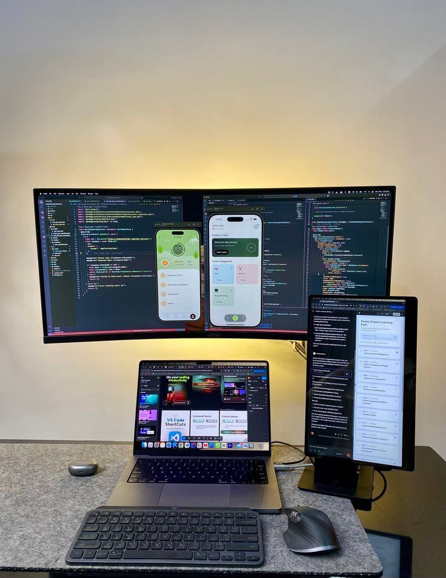

Cut the repetitive work.
Reduce repeated data entry, manual calculations, and report preparation. Let useful software handle routine steps so your team can focus on customers and decisions.
✳ INDEPENDENT THINKING. PURPOSEFUL TECHNOLOGY.
Frontend to backend. Data to decisions.
Digital tools that save time, simplify operations,
and help your business work more efficiently.
 THE WORKSPACE / IDEAS INTO EXECUTION
THE WORKSPACE / IDEAS INTO EXECUTION01 / THE PROJECT ARCHIVE
THE IDEAS BECAME SOMETHING.
Explore the applications, websites, dashboards, and automation tools already built—and the next projects taking shape.
THE BUSINESS BENEFITS
Every solution starts with a practical goal: save your team time, help control operating costs, or make business information easier to access. Here are three ways the right tools can improve everyday work.
Reduce repeated data entry, manual calculations, and report preparation. Let useful software handle routine steps so your team can focus on customers and decisions.
Bring scattered records and disconnected steps into a clearer workflow. Fewer repeated tasks and avoidable corrections can help reduce the time and cost of running your operations.
Keep balances, job progress, stock, and business activity easier to find. Spend less time asking for updates and more time acting on the information you have.
What that can look like: a report generated from recorded activity, a supplier balance available when you need it, or a customer update triggered when a job milestone is recorded.
02 / EXPERTISE & CAPABILITIES
FROM THE INTERFACE TO THE ENGINE.Give your business a clear, usable digital presence.
Build the logic and records that make an application useful.
Make your records easier to interpret and act on.
Spend less time repeating the same administrative steps.
BEFORE THE BUILD
Research, problem definition, and translating business needs into software shape the work from the start—from inventory and financial record design to client forms, document collection, and payment planning.
EXPLORING NEXT AI-assisted interpretation and decision support, alongside continued machine-learning study.
Database applications · Prototyping · Application improvements · Troubleshooting
03 / HOW I WORK
A CLEAR PROCESS. ROOM FOR YOUR INPUT.You bring the business context. I help shape the solution, make it tangible, and refine it with you.
UNDERSTAND & DEFINE
We discuss your goals, current workflow, and where time or information gets lost. Together, we define what the tool needs to do and what a useful result looks like.
A clear scope and agreed prioritiesBUILD & REVIEW
I develop a prototype or an initial working version for you to explore. You can respond to the layout, features, and workflow while there is still room to shape them.
A reviewable version and your feedbackTEST & REFINE
We check the important journeys, calculations, and data flows against the agreed scope. Feedback guides improvements, with remaining limitations made clear.
A refined solution with checks recordedHAND OVER & PLAN AHEAD
We agree how the solution will be delivered, used, and maintained. Setup guidance, access, and any ongoing support are defined around the project.
An agreed handover and next steps04 / THE PERSON BEHIND THE WORK

I’m Marvel. I build digital tools around problems worth solving.
My work spans Python applications, business dashboards, websites, and connected workflows. It starts with understanding what someone needs to see, track, or do—and shaping a useful way to get there.
Alongside practical projects, I’m developing my understanding of machine learning and exploring where AI can add value to business tools.
View résumé ↗05 / YOUR NEXT CHAPTER
AN IDEA. A PROBLEM. A POSSIBILITY.You don’t need a technical brief.
Start with what you’re trying to improve.